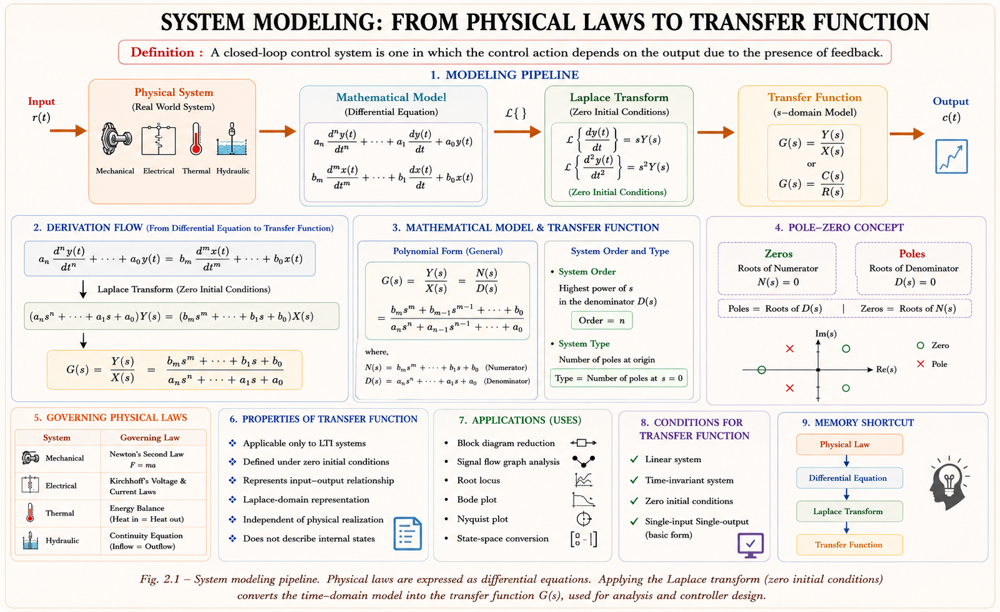
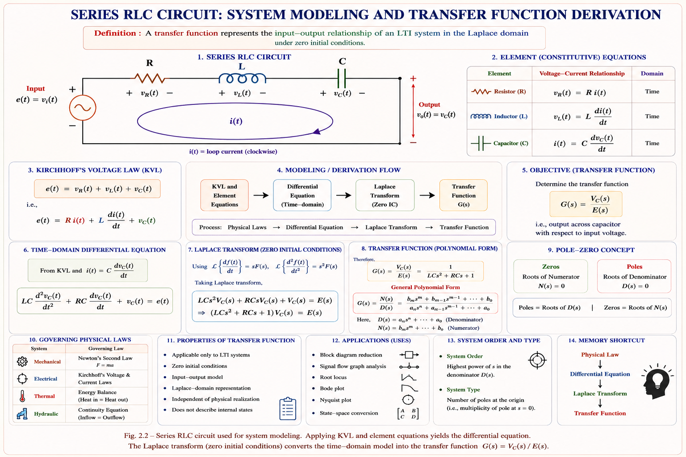
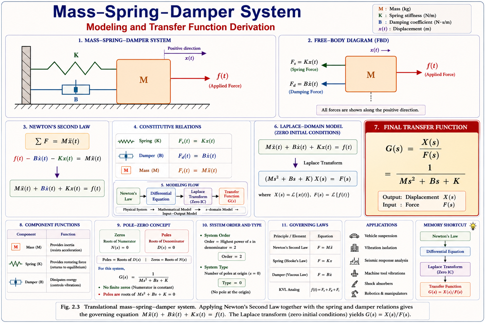
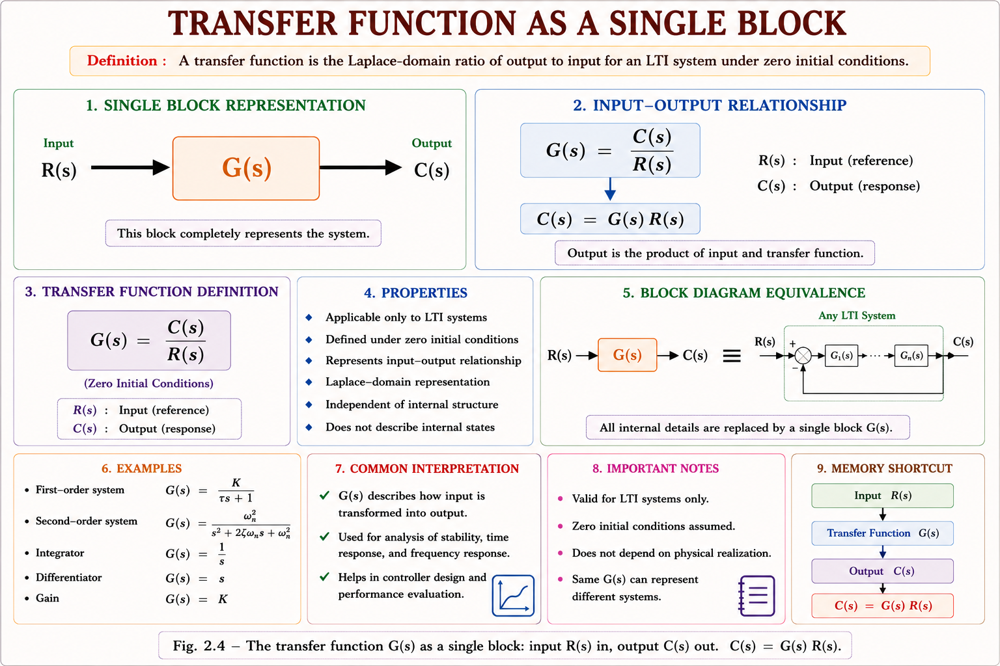
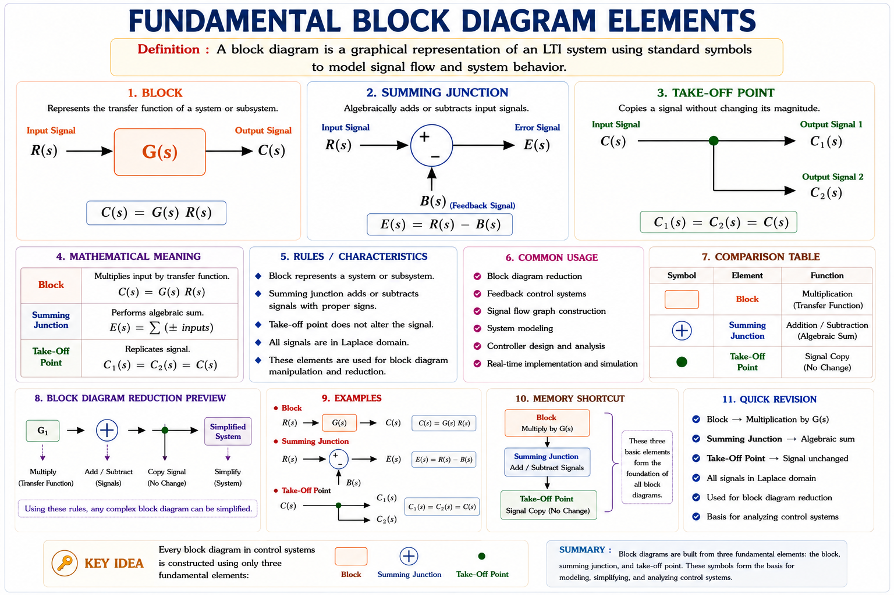
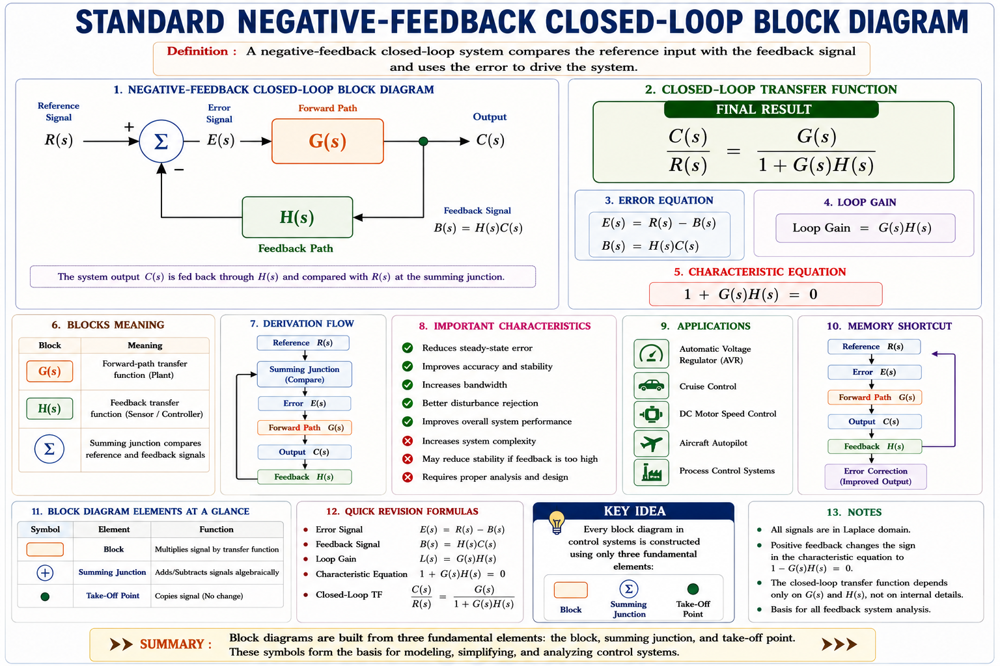
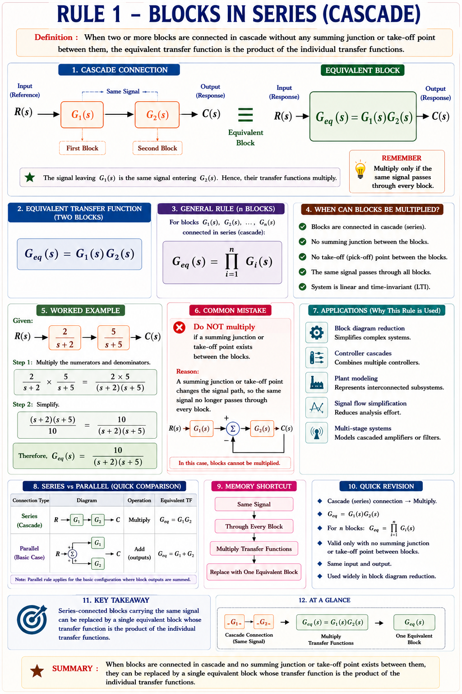
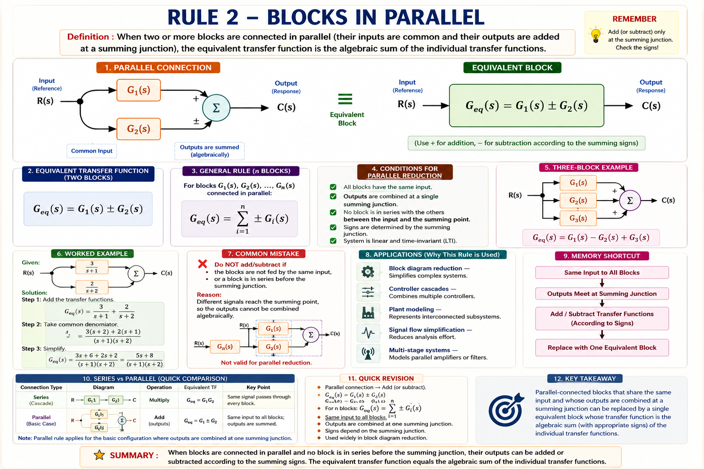
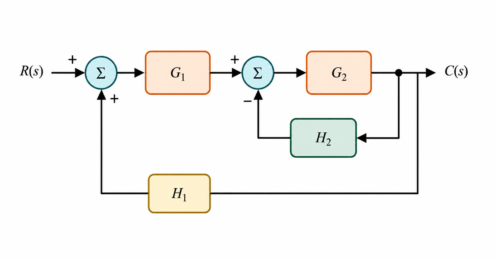

Differential-equation modeling of physical systems, electrical and mechanical analogies, the transfer function concept and its properties, block diagram representation, and the complete set of block diagram reduction rules — with full derivations and solved GATE/IES numericals.
Before an engineer can design a controller for a robot arm, a cruise-control system, or a chemical reactor, they must first answer a deceptively simple question: how does the system actually behave? A mathematical model is a set of equations that predicts the output of a physical system for any given input, without having to build and test the real hardware. This is the entire foundation on which classical control theory is built.
Every physical system — electrical, mechanical, thermal, or hydraulic — obeys conservation laws (Kirchhoff's laws, Newton's laws, energy balance). Writing these laws for a system produces a differential equation. Once we have that differential equation, the Laplace transform converts it into an algebraic transfer function, which is far easier to analyse, combine, and design with.

Classical control theory (this chapter and the ones that follow) almost always assumes the system is linear and time-invariant (an LTI system). Real systems are rarely perfectly linear, but around a chosen operating point they can usually be linearised — this is why the transfer function approach works so well in practice.
A differential equation model relates the input and output of a system through derivatives with respect to time. For a linear, time-invariant, lumped-parameter system, the general form is an nth-order linear differential equation with constant coefficients.
Here c(t) is the output (controlled variable) and r(t) is the input (reference or forcing function). The coefficients ai and bi are constants determined by the physical parameters of the system (resistance, mass, stiffness, and so on).
Students often forget that the transfer function is defined only under the assumption of zero initial conditions. If the system starts with stored energy (a charged capacitor, a compressed spring), the transfer function alone does not capture that — you must add the initial-condition terms separately when solving with Laplace transforms.
A system is linear if it obeys both the principles of homogeneity (scaling the input scales the output by the same factor) and additivity (the response to a sum of inputs equals the sum of the individual responses). Only linear systems can be represented by a single transfer function, because the transfer function itself is derived by assuming superposition holds.
Electrical circuits are modeled using Kirchhoff's Voltage Law (KVL) and Kirchhoff's Current Law (KCL). The three passive elements — resistor, inductor, and capacitor — each contribute a distinct type of term to the governing differential equation.
| Element | V–I Relation | Laplace (zero I.C.) | Energy Behaviour |
|---|---|---|---|
| Resistor R | v = iR | V(s) = R·I(s) | Dissipates energy |
| Inductor L | v = L(di/dt) | V(s) = sL·I(s) | Stores energy in magnetic field |
| Capacitor C | i = C(dv/dt) | V(s) = I(s)/(sC) | Stores energy in electric field |
Consider a series RLC circuit driven by a voltage source e(t), with current i(t) flowing around the single loop and output taken as the capacitor voltage.

Step 1 — Apply KVL around the loop:
Step 2 — Express current in terms of capacitor charge (since i = C dvc/dt):
Step 3 — Laplace transform (zero initial conditions) and form the transfer function:
This is a standard second-order transfer function. Comparing with the canonical form ωn²/(s² + 2ζωns + ωn²) gives ωn = 1/√(LC) and ζ = (R/2)·√(C/L) — this exact mapping is a GATE favourite.
Mechanical systems are modeled using Newton's Second Law: the sum of forces (or torques) acting on a body equals mass (or moment of inertia) times acceleration. There are two families — translational (motion in a straight line) and rotational (motion about an axis).
| Translational | Relation | Rotational Analogue | Relation |
|---|---|---|---|
| Mass, M | F = M(d²x/dt²) | Moment of Inertia, J | T = J(d²θ/dt²) |
| Damper, B | F = B(dx/dt) | Rotational Damper, B | T = B(dθ/dt) |
| Spring, K | F = Kx | Torsional Spring, K | T = Kθ |
Consider a mass M resting on a frictionless surface, connected to a wall through a spring of stiffness K and a damper with coefficient B, driven by an external force f(t). The displacement x(t) is measured from the equilibrium position.

Step 1 — Apply Newton's Second Law (sum of forces = mass × acceleration; the spring and damper forces oppose the applied force, so they enter with a negative sign):
Step 2 — Rearrange into standard form:
Step 3 — Laplace transform (zero initial conditions) and form the transfer function:
Compare this with the RLC transfer function from Section 2.3: M ↔ L, B ↔ R, K ↔ 1/C, f(t) ↔ e(t), x(t) ↔ q(t) (charge). Both are second-order systems with an identical mathematical structure — this is precisely the electrical–mechanical analogy explored next.
For rotational systems, replace force with torque T, mass with moment of inertia J, and linear displacement x with angular displacement θ. A shaft with inertia J, rotational damping B, and torsional spring K, driven by torque T(t), gives:
Because the RLC circuit and the mass–spring–damper system are governed by mathematically identical second-order differential equations, an electrical circuit can be built to simulate the behaviour of a mechanical system, and vice versa. This is the basis of "analog computing" that predates digital simulation, and it remains a favourite conceptual question in GATE and IES.
Here force f(t) is analogous to voltage e(t), and velocity is analogous to current (mesh/loop analysis of the circuit).
| Mechanical Quantity | Electrical Analogue (F–V) |
|---|---|
| Force, f | Voltage, e |
| Mass, M | Inductance, L |
| Damping coefficient, B | Resistance, R |
| Spring stiffness, K | Reciprocal capacitance, 1/C |
| Displacement, x | Charge, q |
| Velocity, dx/dt | Current, i |
Here force f(t) is analogous to current i(t), and velocity is analogous to voltage (nodal analysis of the circuit).
| Mechanical Quantity | Electrical Analogue (F–I) |
|---|---|
| Force, f | Current, i |
| Mass, M | Capacitance, C |
| Damping coefficient, B | Reciprocal resistance, 1/R |
| Spring stiffness, K | Reciprocal inductance, 1/L |
| Displacement, x | Flux linkage, ψ |
| Velocity, dx/dt | Voltage, v |
For F–V analogy remember M→L, B→R, K→1/C ("Mass Loves inductance, B is Resistance, K is inverse Capacitance"). For F–I analogy everything flips to the dual network: M→C, B→1/R, K→1/L. If you know one analogy, the other is simply the dual network (series ↔ parallel, loop ↔ node).
Students frequently swap which analogy uses series vs parallel elements. In the F–V analogy, a mechanical system with elements in parallel (sharing the same displacement) maps to electrical elements in series (sharing the same loop current) — the topology inverts between the mechanical and electrical domains.
The transfer function G(s) of a linear, time-invariant system is defined as the ratio of the Laplace transform of the output to the Laplace transform of the input, with all initial conditions assumed to be zero.

Expanding the definition for the general nth-order differential equation of Section 2.2:
The numerator polynomial, when set to zero, gives the zeros of the system. The denominator polynomial, when set to zero, gives the poles — and this denominator is called the characteristic equation, whose roots decide system stability.
Order is the degree of the characteristic equation (total number of poles). Type is the number of poles specifically located at the origin, s = 0 (i.e., the number of pure integrators in the forward path). A system can be Type-1 and Order-3 simultaneously — these are independent properties and are frequently tested together.
The transfer function representation carries a specific set of mathematical properties that every GATE/IES aspirant must know cold — several of these directly generate multiple-choice traps.
| Type | Condition | Physical Realizability |
|---|---|---|
| Strictly Proper | degree(numerator) < degree(denominator) | Always realizable |
| Proper (Biproper) | degree(numerator) = degree(denominator) | Realizable |
| Improper | degree(numerator) > degree(denominator) | Not physically realizable |
An improper transfer function (numerator order > denominator order) would require an ideal, noise-amplifying pure differentiator of order higher than the system can physically provide. No real system exhibits this — if you derive an improper G(s), recheck your algebra; a modeling error is almost certainly present.
If the input is a unit impulse, r(t) = δ(t), then R(s) = 1, and the output becomes simply:
This is why the transfer function is sometimes directly called the impulse response function — the Laplace transform of a system's response to a unit impulse input, applied with zero initial energy stored, is precisely its transfer function.
A block diagram is a graphical shorthand for a system of equations. It shows how signals flow between sub-systems, making it far easier to visualise a complex control loop than a page of algebra. Every block diagram is built from exactly three basic elements.

Nearly every practical control system is a closed loop: a forward path block G(s), a feedback path block H(s), and a summing junction that compares the reference input with the feedback signal.

From the diagram: the summing junction produces the error signal, the forward block converts error into output, and the feedback block returns a scaled sample of the output.
For negative feedback (the standard, stabilising case): C/R = G/(1+GH). For positive feedback (rare, used in oscillators): C/R = G/(1−GH). The sign in the denominator always matches the sign at the summing junction, flipped.
Large block diagrams with multiple loops, summing points, and take-off points can be systematically collapsed into a single equivalent block using a fixed set of algebraic reduction rules. Every rule is simply the graphical version of an algebraic simplification.


This is simply the closed-loop derivation of Section 2.8 applied locally to any inner loop:
| Move | Compensation Needed |
|---|---|
| Take-off point moved ahead of a block G | Insert G in the branched (take-off) path |
| Take-off point moved after a block G | Insert 1/G in the branched (take-off) path |
| Move | Compensation Needed |
|---|---|
| Summing point moved ahead of a block G | Insert 1/G on the signal entering the moved summing point |
| Summing point moved after a block G | Insert G on the signal entering the moved summing point |
A summing point and a take-off point can never be interchanged directly by simply swapping their positions — doing so changes the signal meaning at that node. Only two summing points (or two take-off points) sitting next to each other with nothing in between may be freely interchanged.
| # | Configuration | Equivalent Block |
|---|---|---|
| 1 | Series / Cascade | G1 × G2 |
| 2 | Parallel | G1 ± G2 |
| 3 | Feedback loop | G / (1 ∓ GH) |
| 4 | Take-off point shifted ahead of G | Add G in branch |
| 5 | Take-off point shifted after G | Add 1/G in branch |
| 6 | Summing point shifted ahead of G | Add 1/G to incoming signal |
| 7 | Summing point shifted after G | Add G to incoming signal |
| 8 | Adjacent summing points | Freely interchangeable |
Consider a two-loop system: an inner feedback loop with forward block G2 and feedback block H2, cascaded after a block G1, all inside an outer feedback loop with feedback block H1. This is one of the most frequently drawn diagrams in GATE Control Systems.

Final closed-form result after substituting and clearing the compound fraction:
Always reduce the innermost loop first, then work outward. Never try to collapse an outer loop while an inner loop is still un-reduced — the algebra becomes far messier and error-prone. This "inside-out" strategy applies to every multi-loop diagram.
Step 1 — KVL:
Step 2 — Substitute and Laplace transform (zero I.C.):
This is a standard first-order low-pass filter transfer function with time constant τ = RC and a single pole at s = −1/RC.
Denominator (characteristic polynomial): s(s+1)(s+5) = s³ + 6s² + 5s → degree 3
Order = 3 (degree of the characteristic equation)
Poles (roots of denominator): s = 0, s = −1, s = −5
Type = 1 (exactly one pole located at the origin, s = 0)
Zeros (roots of numerator): s = −2
Poles (3) ≥ Zeros (1) → the transfer function is strictly proper and physically realizable, consistent with Section 2.7.
For unity feedback, H(s) = 1:
Answer: C(s)/R(s) = 20/(s² + 4s + 20), a standard underdamped second-order closed loop with ω_n = √20 ≈ 4.47 rad/s and ζ = 4/(2×4.47) ≈ 0.447.
Step 1 — Reduce inner loop (G2 with H2):
Step 2 — Cascade with G1:
Step 3 — Outer unity feedback loop:
Answer: C(s)/R(s) = 10/(s+12) — a simple first-order closed loop despite the two nested feedback loops in the original diagram.
With no spring (K = 0), Newton's law for rotation gives:
Laplace transform (zero I.C.), with Ω(s) = the transform of ω(t):
Because there is no spring term, this reduces to a first-order system in the velocity variable ω — exactly analogous to an RL circuit with no capacitor. This J–B-only case (K = 0) is a frequently tested GATE simplification.
The following topics consistently appear in GATE EE / EC / IN (Control Systems section) and IES E&T:
The transfer function of a linear time-invariant system is defined as the ratio of the Laplace transform of the output to the Laplace transform of the input:
Explanation: The transfer function is, by definition, computed with zero initial energy stored in the system. Any stored energy must be handled separately through additional initial-condition terms — it is not part of G(s) itself.
A unity feedback system has G(s) = K / [s²(s+3)]. The type and order of the system are:
Explanation: Denominator s²(s+3) = s³ + 3s² is a 3rd-degree polynomial → Order = 3. There are exactly two poles at the origin (from the s² term) → Type = 2. Order and type must always be evaluated independently.
In the force–voltage (loop) analogy between mechanical and electrical systems, which pairing is correct?
Explanation: In the F–V analogy, force is analogous to voltage, and the analysis follows loop (mesh) equations: mass stores kinetic energy like an inductor stores magnetic energy (M↔L), damping dissipates energy like a resistor (B↔R), and spring stiffness maps to the reciprocal of capacitance (K↔1/C).
A take-off point located immediately after block G is shifted to immediately before block G (i.e., moved backward across G). To keep the branched signal unchanged, which block must be inserted in the branch?
Explanation: Moving a take-off point from after G to before G means the branch signal used to be G·(input) but is now just (input). To recover the original branch signal G·(input), a block of 1/G must be inserted into the branch path.
Series multiplies, Parallel adds, Feedback divides by (1 ± GH). Reduce loops from the inside out, and always double-check the sign at each summing junction before writing the final closed-loop expression.
Zero Initial Conditions — every transfer function derivation in this chapter, and every one that follows, silently assumes ZIC unless explicitly stated otherwise. Forgetting this is the single most common reason for incorrect answers when initial-condition-based questions appear.
Have a question on differential equation modeling, electrical/mechanical analogies, transfer functions, or block diagram reduction? Type below or pick a suggestion.
Physics (KVL/KCL, Newton's Laws) → differential equation → Laplace transform (zero I.C.) → transfer function G(s) = C(s)/R(s).
R → R, L → sL, C → 1/(sC). Series RLC: V_c(s)/E(s) = 1/(LCs² + RCs + 1), a canonical second-order form.
M → Ms², B → Bs, K → K. Mass-spring-damper: X(s)/F(s) = 1/(Ms² + Bs + K). Rotational: J, B, K replace M, B, K.
F–V: M↔L, B↔R, K↔1/C (loop method). F–I: M↔C, B↔1/R, K↔1/L (node method). F–I is the dual network of F–V.
Defined for LTI systems, zero I.C., property of system only. Poles → stability. Physically realizable ⇒ poles ≥ zeros (proper).
Series multiplies. Parallel adds. Feedback: G/(1±GH). Reduce innermost loop first. Take-off/sum shifts need G or 1/G compensation.
All technical content is derived from the following standard textbooks and learning resources. All explanations, derivations, diagrams and examples are original to Aarova AI.